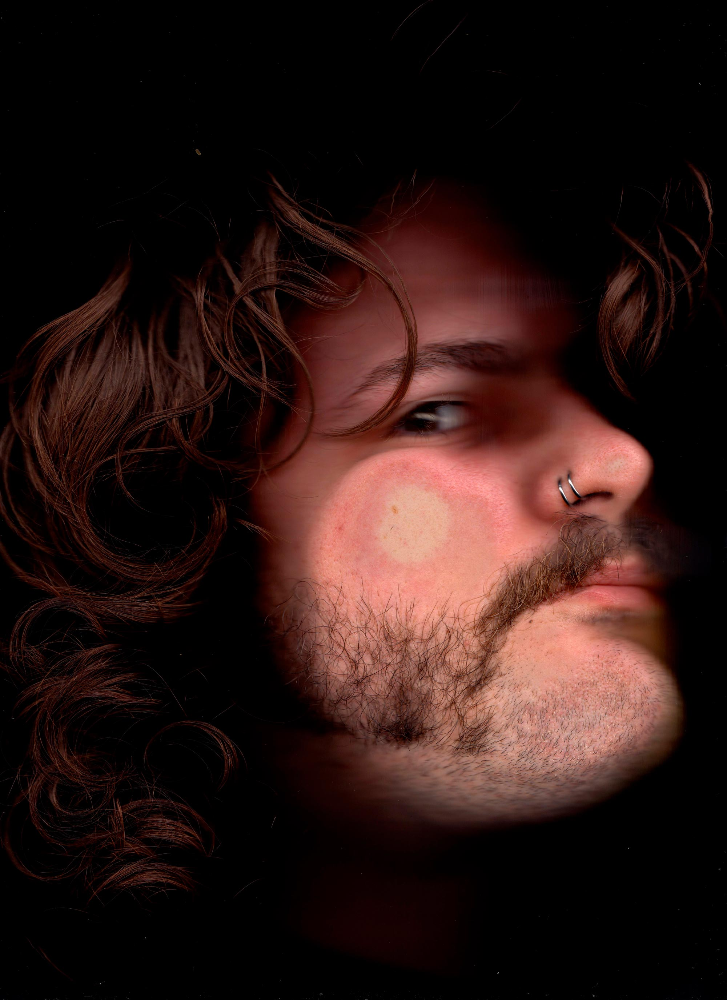

Joel (AKA Brutally Bold) is a Swiss graphic designer rooted in DIY
culture. Staying true to his background in the underground music scene,
he puts great emphasis on analogue techniques and handmade artwork with
a focus on illustrative typography.
DM for contact:
Instagram
